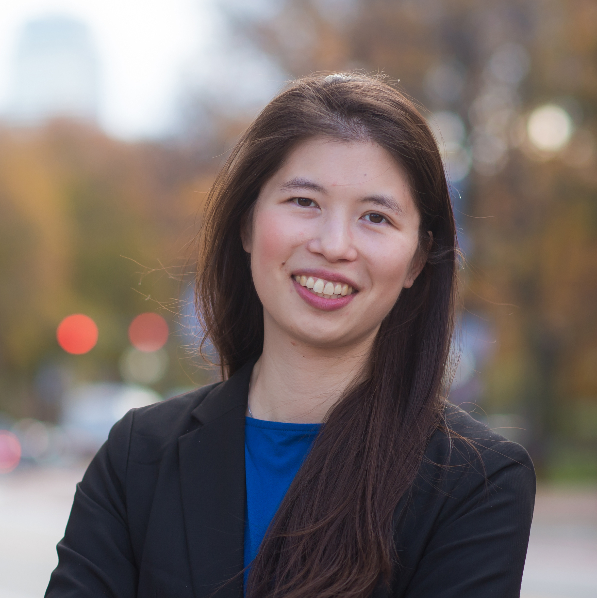
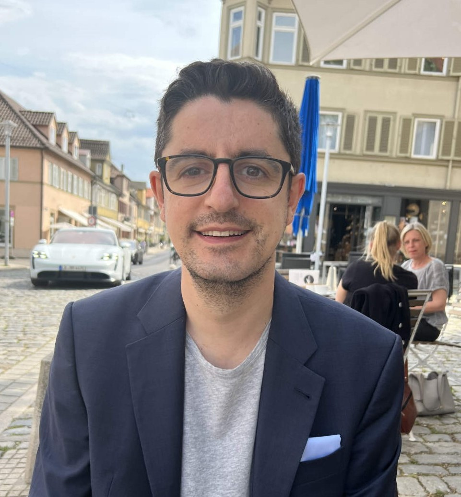

Cathy Wu Massachusetts
Institute of Technology
Cathy Wu is an Assistant Professor at MIT in LIDS, CEE, and IDSS. She holds a Ph.D. from
UC Berkeley, and B.S. and M.Eng. from MIT, all in EECS, and completed a Postdoc at
Microsoft Research. Her research interests are at the intersection of machine learning,
decision making, and mobility. Her current work focuses on how learning-based methods
can advance emerging mobility systems by better coping with the complexity of decisions
and control. She is broadly interested in enabling policy-relevant research by pushing
the boundaries of learning, control, and optimization. Cathy has received a number of
awards, including the NSF CAREER, dissertation awards, and publications with
distinctions. Her work has appeared in the press, including NOVA, Wired, Science
Magazine, the MIT Homepage, and TEDxMIT.

Prof. Gustav Markkula is an engineer by training, and applies quantitative methods and
models to the study of human behaviour and cognition in road traffic. He has a background in
automotive industry R&D (Volvo), and is currently Chair in Applied Behaviour Modelling at
the Institute for Transport Studies, University of Leeds, UK. In his research, he
specialises in the adoption and integration of models from computational cognitive
neuroscience, to support development and testing of safe and human-acceptable technology and
automation.
Yuxiao Chen is a senior research scientist in the autonomous vehicle research group at
Nvidia. His research interest includes safe autonomy, motion planning for AV, especially
policy planning, and generative AI for closed-loop simulation and scene generation of
AV. He did his undergraduate in Tsinghua University, obtained his Ph.D. from the
University of Michigan in 2018, and was a postdoc at Caltech from 2018 to 2021. He
joined Nvidia research in 2021.
Yan Chang is a Tech Lead Manager and Software Engineer at Zoox, where she applies planning
and machine learning techniques to
solve autonomous driving for dense urban environments. She serves as an associate editor of
IEEE Transactions of Transportation
Electrification. She holds a Master degree and Ph.D. degree in Mechanical Engineering from
the University of Michigan - Ann Arbor.
Igor Gilitschenski is an Assistant Professor of Computer Science at the University of
Toronto where he leads the Toronto Intelligent Systems Lab. He is also a (part-time)
Research Scientist at the Toyota Research Institute. Prior to that, Dr. Gilitschenski was a
Research Scientist at MIT’s Computer Science and Artificial Intelligence Lab and the
Distributed Robotics Lab (DRL) where he was the technical lead of DRL’s autonomous driving
research team. He joined MIT from the Autonomous Systems Lab of ETH Zurich where he worked
on robotic perception, particularly localization and mapping. Dr. Gilitschenski obtained his
doctorate in Computer Science from the Karlsruhe Institute of Technology and a Diploma in
Mathematics from the University of Stuttgart. His research interests involve developing
novel robotic perception and decision-making methods for challenging dynamic environments.
He is the recipient of several best paper awards including at the American Control
Conference, the International Conference of Information Fusion, and the Robotics and
Automation Letters.

Olger Siebinga
Delft University of Technology
Olger Siebinga is a PhD candidate at Delft University of Technology, working in the field of
human-robot interaction. With a background in mechanical engineering, he has always been
fascinated by the combination of mechanical, electrical, and software engineering. But
throwing humans in the mix is what makes things really interesting. Many robots can behave
safe and optimal in their own perfect, isolated world. But to make modern robots, such as
automated vehicles, function in the real world, they must be able to interact with humans in
a safe and natural manner. This is where his current work focuses on: understanding human
(driving) behavior and describing it in a mathematical way such that automated vehicles can
make decisions based on their understanding of humans.
Short bio (to be updated)